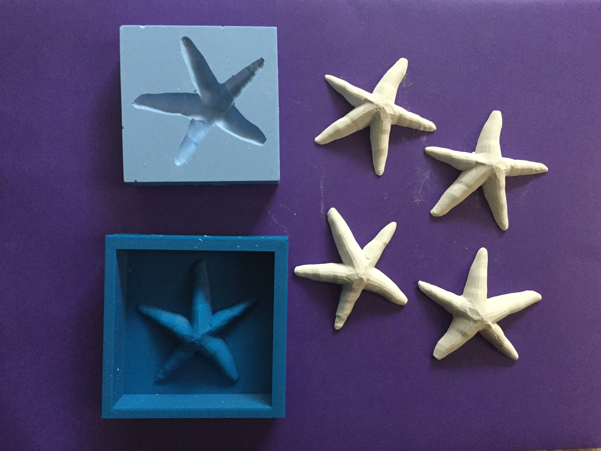
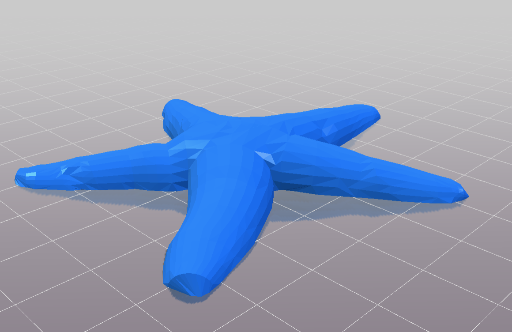
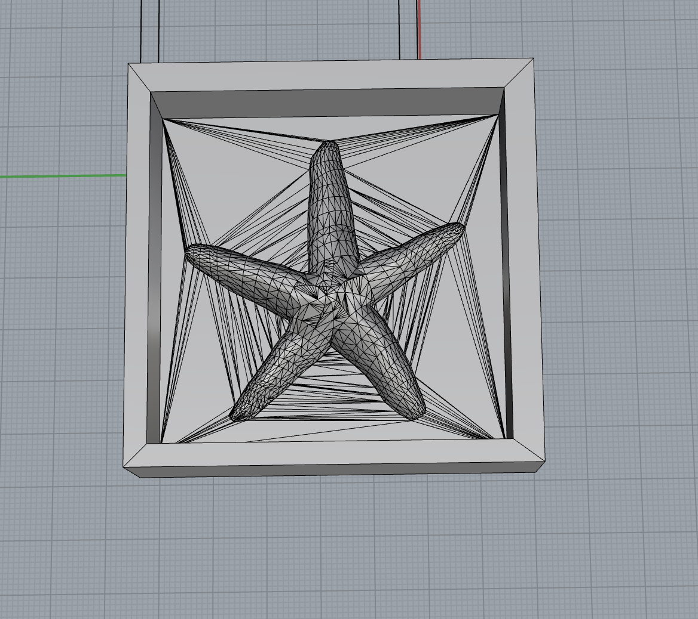
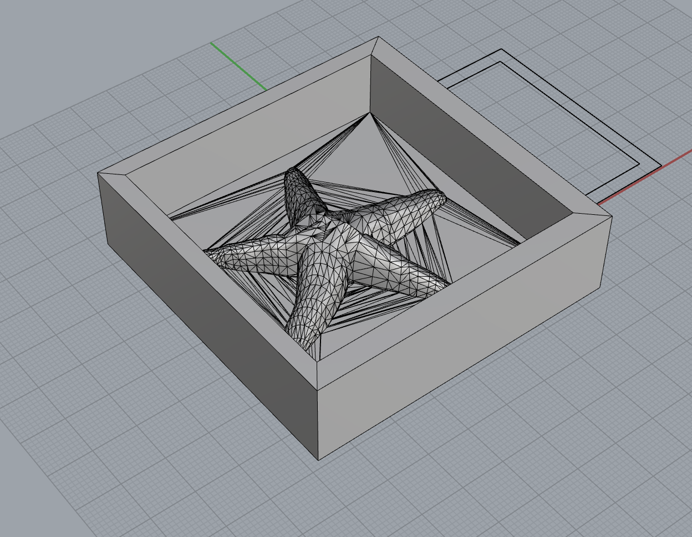
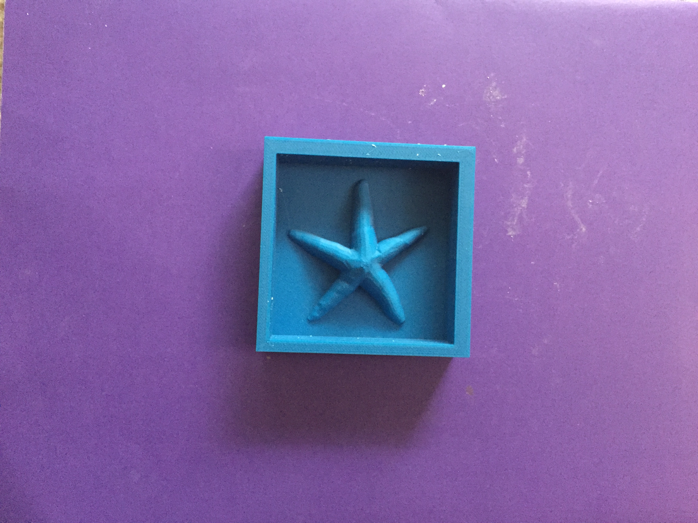
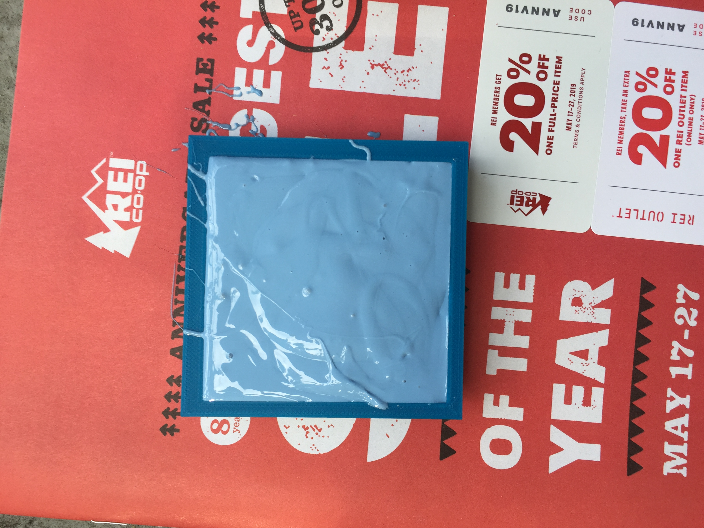
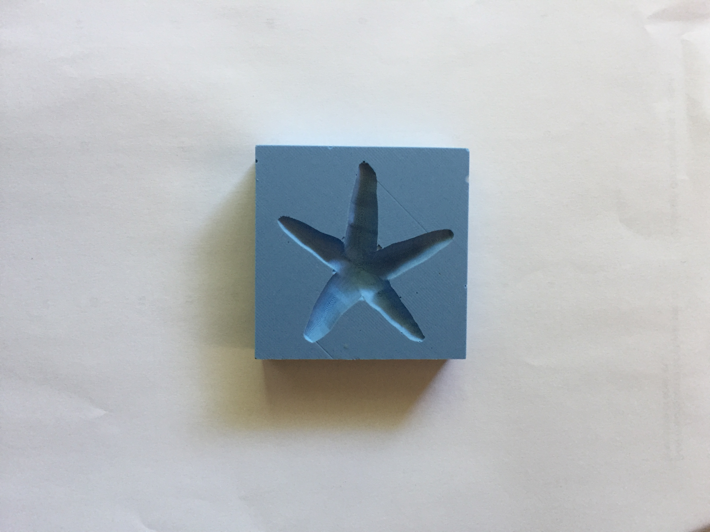
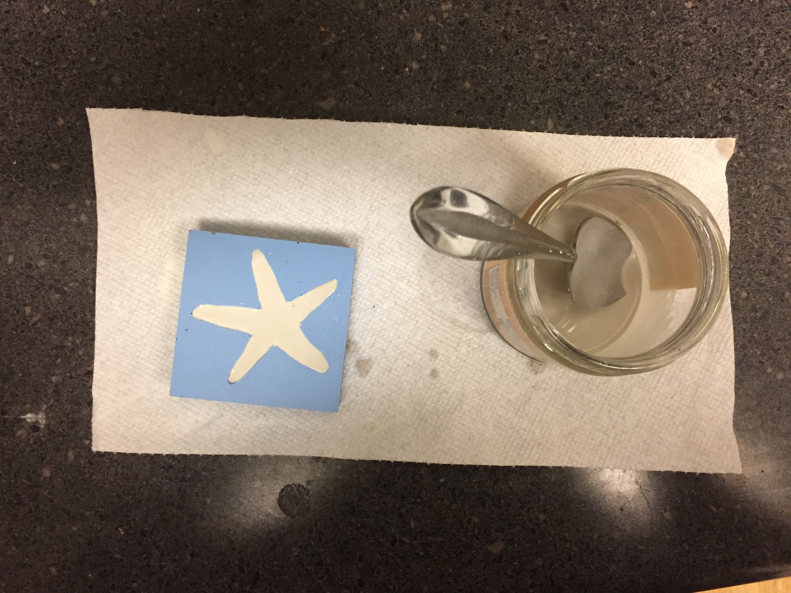
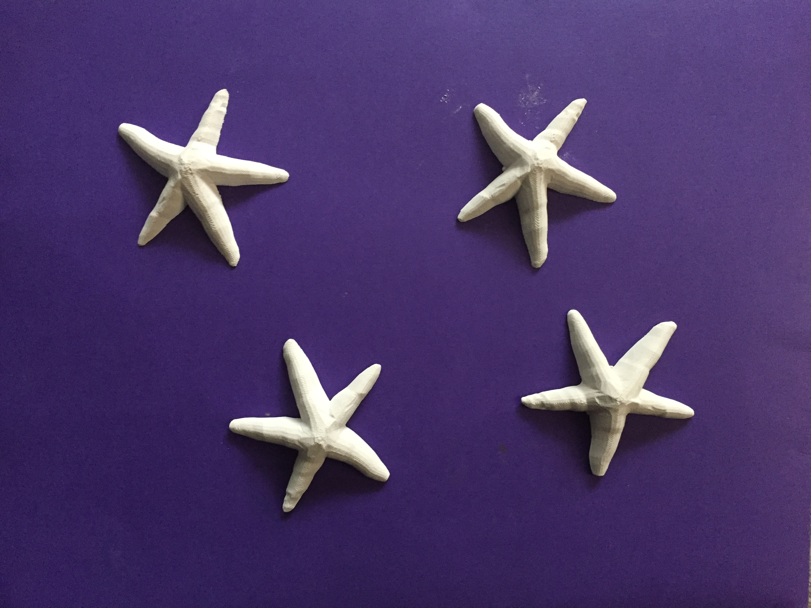

A6: Molding and casting

For this assignment, I created a starfish.
I started by creating the outside mold base in Rhino and I downloaded the starfish shape from thingiverse.
Starfish from thingiverse webpage
Starfish image

I then added the starfish to the mold and ensured that the base of the starfish touched the base of the mold and that there were no gaps.
Outer mold in Rhino

Another view of outer mold in Rhino

Hearing about all the difficulties people were facing with wax milling, I decided to 3d print my outer mold, so I prepared my rhino .stl file in dremel to produce gcode file.
Mold getting ready to be 3D printed via Dremel
 I used the default settings for the 3D print, except profile (changed it to Medium Quality - 0.2 mm) and it took 3.5 hrs to complete without any complications.
3D printing in action at the MILL
I used the default settings for the 3D print, except profile (changed it to Medium Quality - 0.2 mm) and it took 3.5 hrs to complete without any complications.
3D printing in action at the MILL
The outer mold looks like this:

Then I went ahead to create the actual mold using Oomoo Smooth-On Silicone. A picture of the mold air drying.

The mold came out smoothly with the use of a blunt knife.

Then I created 4 starfish out of the mold one by one.
I used the ratio:
1.5(Plaster):1(water)
Each time it took around 30 minutes to dry and I was easily able to take the piece out of the mold.
Preparing first cast

All four Starfish

I was very happy with the final result and the whole process.
Final Result:
Source Files:
Starfish .stl file
Outer Mold .stl file
Onshape file 3
Outer Mold .gcode file